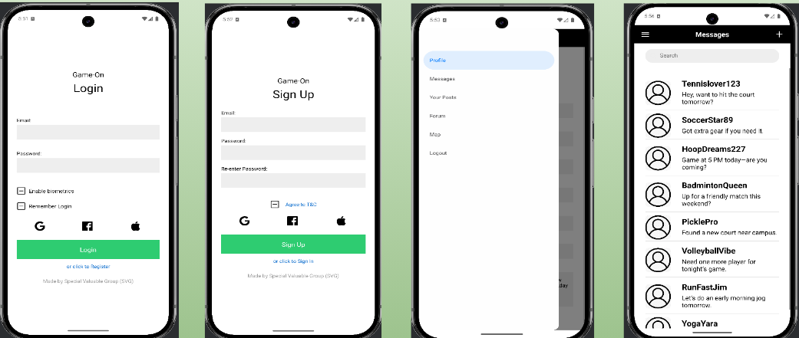
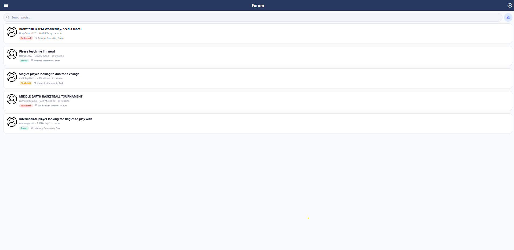
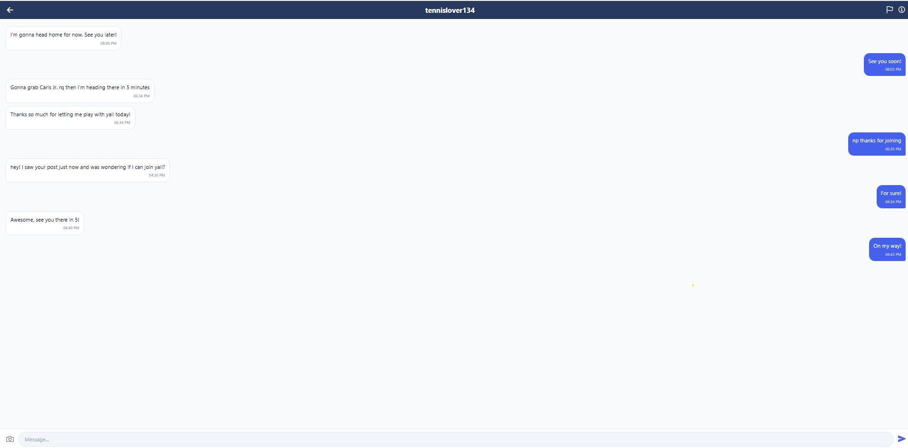
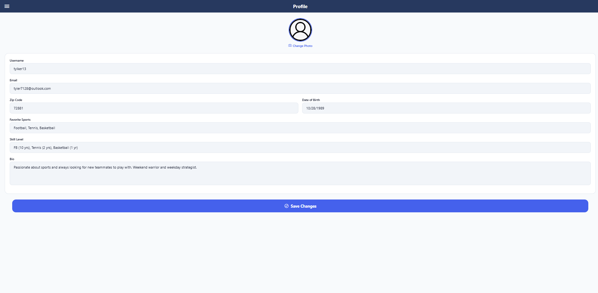
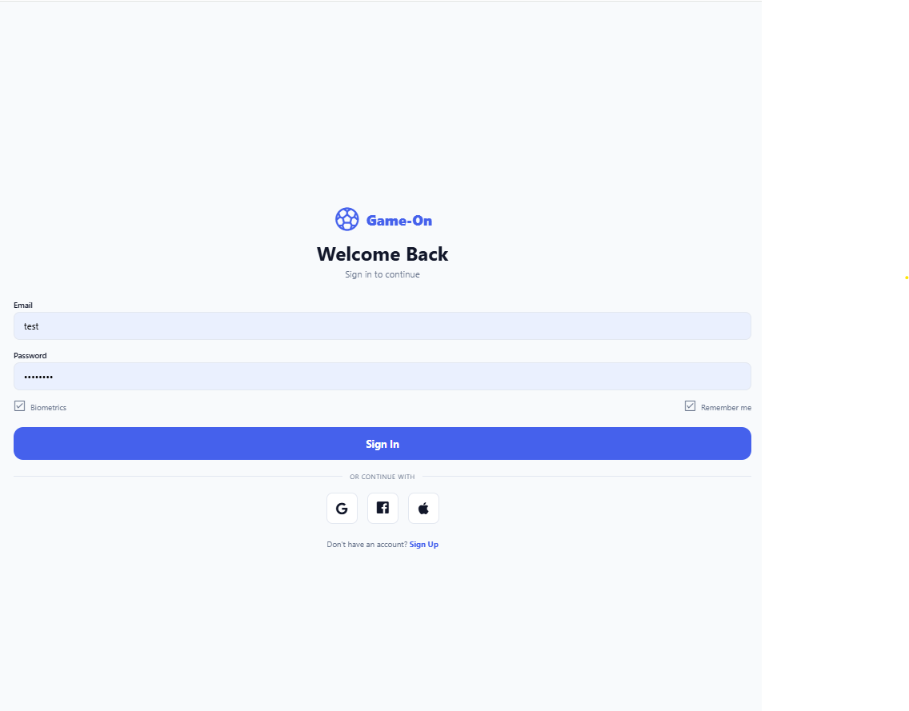

Game-On — Sports Buddy App
A React Native mobile application designed to help people find sports partners in their area. The app features forum-style discussion threads, user filtering by sport and skill level, and a fully inclusive design system with a color-blind-safe palette — validated through first-click testing and usability studies.
The Problem
Finding people to play sports with — especially for newcomers to an area or people looking to try a new sport — is surprisingly difficult. Existing social media groups are unstructured, and dedicated sports apps focus on competitive leagues rather than casual pickup games.
- No easy way to discover people nearby who share your sport and skill level.
- Group chats and social media threads lack structure for coordinating game times and locations.
- Existing apps didn't prioritize accessibility or inclusive design.
My Role & Contributions
Design Leadership
- Led rapid low-fidelity mockup sessions and produced Figma prototypes
- Designed a color-blind-safe color palette meeting WCAG AA contrast ratios
- Created a reusable component design system (buttons, cards, inputs, navigation)
- Conducted first-click tests to validate information architecture
Front-End Development
- Built interactive UI components for user filtering and profile management
- Implemented the top navigation bar and tab-based routing
- Developed forum-style thread views with nested replies
- Integrated user authentication flow
Tech Stack
React Native
TypeScript
Expo
Figma
React Navigation
Screenshots





Challenges & Solutions
- Color-blind accessibility: Standard sport-category color coding fails for ~8% of men. I selected a palette verified against all three major color blindness types using simulation tools.
- Information architecture: First-click tests revealed users expected filtering before browsing threads. We reorganized the navigation to surface filters on the home screen.
- Coordinating a 5-person team: Clear role assignments and weekly design reviews kept the 12-week timeline on track despite varying skill levels.
Outcomes
- Delivered a functional prototype with core features in 12 weeks.
- Usability testing validated the navigation structure and filtering workflow.
- Design system documentation enabled consistent contribution from all team members.
- First-click test results demonstrated 85%+ correct navigation to target features.
Lessons Learned
- Investing in a design system early pays dividends — the team shipped UI features faster once components were standardized.
- First-click testing is low-cost and high-value for validating navigation before writing code.
- Accessibility isn't an afterthought — designing for inclusion from day one produced a better experience for everyone.